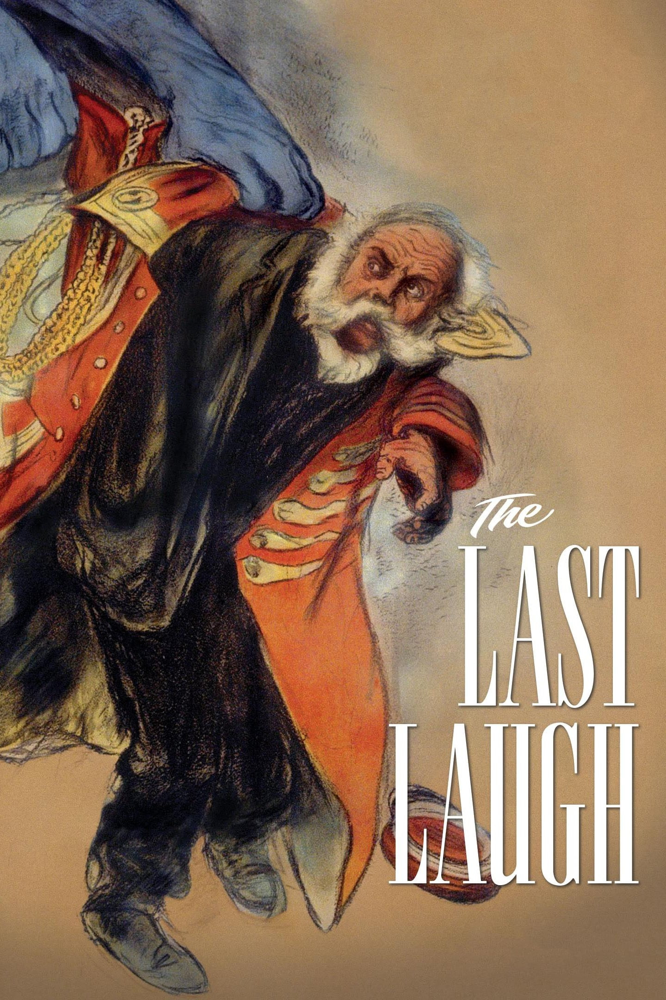
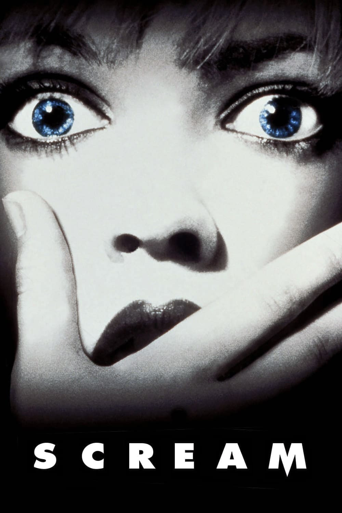

The Last Laugh (1924)
★ ★ ★ ★
02-11-2026

No greater test of one's attention span than a film with no audio or intertitles, save for one from the director himself, who reminds us that the fantastical happy ending is just that — fantastical. That makes the final act of the film equally depressing as the rest of it, knowing the doorman would in reality rot away miserably. It is touching and tragic that in this ideal scenario, the doorman, who has nothing without his job and uniform, dreams of being generous and kind to others. As effective as that singular intertitle is, most of the film is carried by its visual techniques alone. The cinematography is incredibly dynamic and impressive, particularly the dream sequence and distortions used to reflect the doorman's psyche in wake of the humiliation he is facing. I did feel it dragged on somewhat, which prevented me from fully enjoying the film, but it is so special as an early experiment into the power and potential of cinema and visual storytelling, setting it apart as its own unique medium rather than a recorded form of theatre or illustrative depiction of literature. No greater test of one's attention span than a film with no audio or intertitles, save for one from the director himself, who reminds us that the fantastical happy ending is just that — fantastical. That makes the final act of the film equally depressing as the rest of it, knowing the doorman would in reality rot away miserably. It is touching and tragic that in this ideal scenario, the doorman, who has nothing without his job and uniform, dreams of being generous and kind to others. As effective as that singular intertitle is, most of the film is carried by its visual techniques alone. The cinematography is incredibly dynamic and impressive, particularly the dream sequence and distortions used to reflect the doorman's psyche in wake of the humiliation he is facing. I did feel it dragged on somewhat, which prevented me from fully enjoying the film, but it is so special as an early experiment into the power and potential of cinema and visual storytelling, setting it apart as its own unique medium rather than a recorded form of theatre or illustrative depiction of literature.
Clayface (2026)
★ ★ ★
31-10-2026
Not bad, though I feel a little disappointed after the 18 rating and horror movie marketing. There is some great body horror, like Matt cutting open his eyelids with scissors, but had the film committed to the grotesqueness more, it could have been incredible. For example, Caitlyn, the only person who understands and accepts Matt for who he is, kisses him only after his face returns to normal, though it would have been far more impactful otherise. The film is fun though, like any other superhero (or villain) film, and the club scene is especially entertaining. The ending with pseudo-Caitlyn is very haunting, touching on the sort of horror I wish the film played more with. This version of Matt Hagen is pretty likeable and sympathetic from the start, which is a refreshing twist on hot asshole who only becomes sympathetic once he loses his privilege. Matt's relationship with Corey is also given a lot of focus so his hurt at the betrayal feels palpable, though it could have gone deeper to evoke more sympathy for Corey and heighten the gravity of what Matt had just done. At first, I thought they would finally commit to making Matt gay, which would ad depth to the wider themes of the film, but they do not go down that route. I also think that for a work set in Gotham, which is unique in the pervasiveness of its corruption and immorality, it does not do enough to form a distinct characterisation of the city. This could take place in any American city. A pretty decent introduction of Clayface to live action, but not as special as I had hoped.
Scream (1996)
★ ★ ★ ★ ★
31-10-2026

There are a lot of films out there that were initially quite innovative, but having been since overdone and improved upon can no longer be appreciated by the contemporary viewer fully. Scream is not one of these. It seems that everything in horror tries to be Scream these days, but nothing comes close — not even its own sequels. The script is incredibly tight and every moment is thoughtful, but not at the expense of hollowing out the characters or story. So much depth is present with a sophisticated commentary on cinematic horror, its tropes, and its misogyny in a way that feels natural and not preachy or shoehorned in. And it does all this while having fun. Most importantly, Ghostface’s identity is embedded into the film, scene by scene, feeling intentional unlike a last minute decision wherein the killer could be interchangeable with any member of the cast.